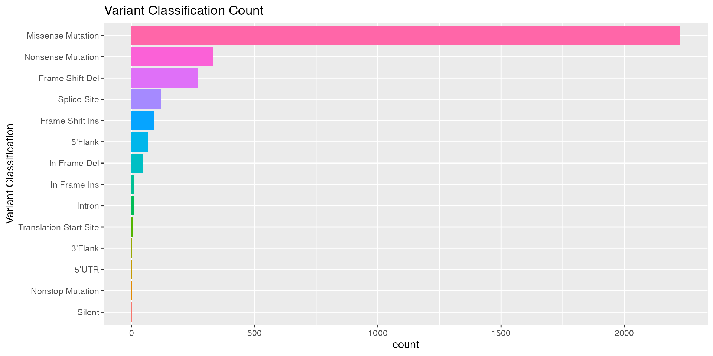
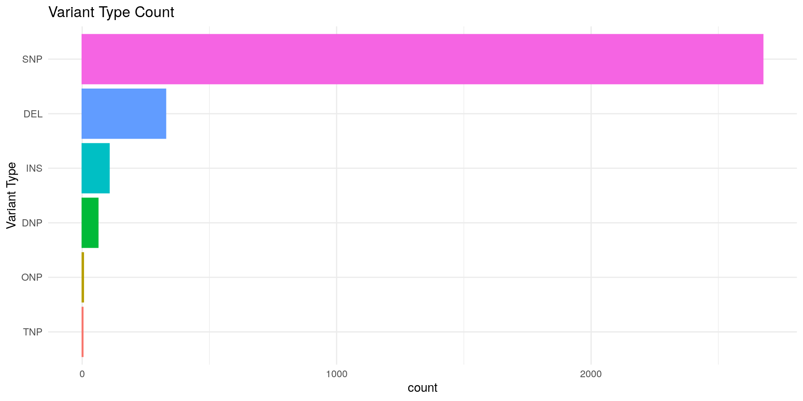
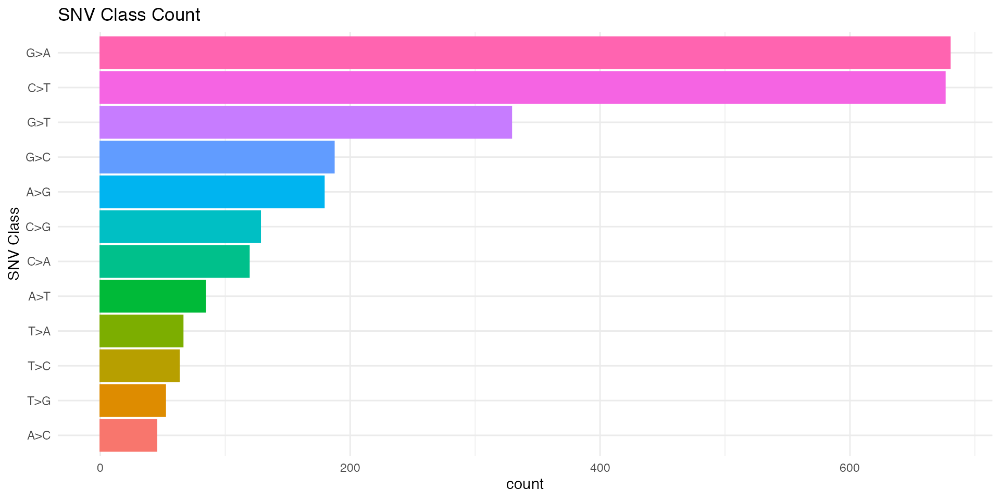
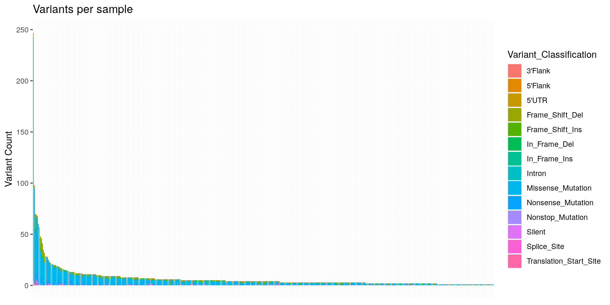
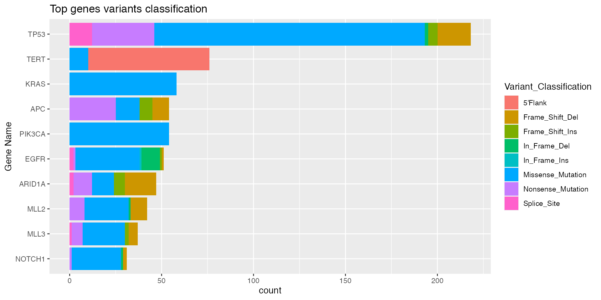
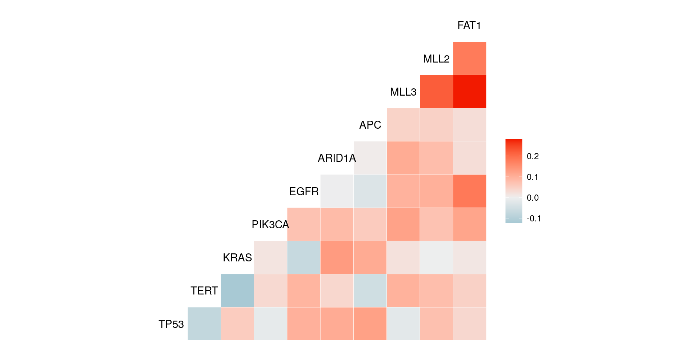
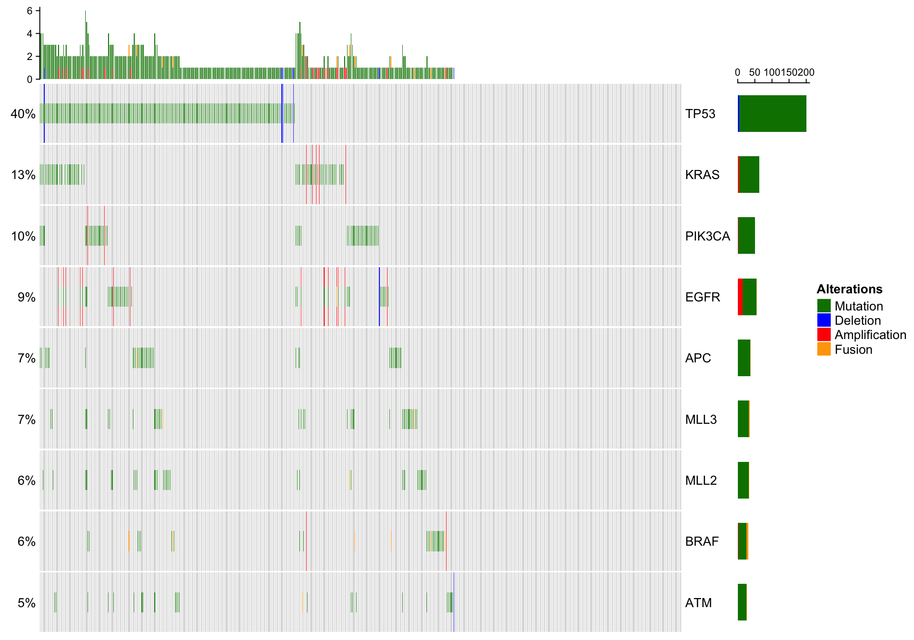
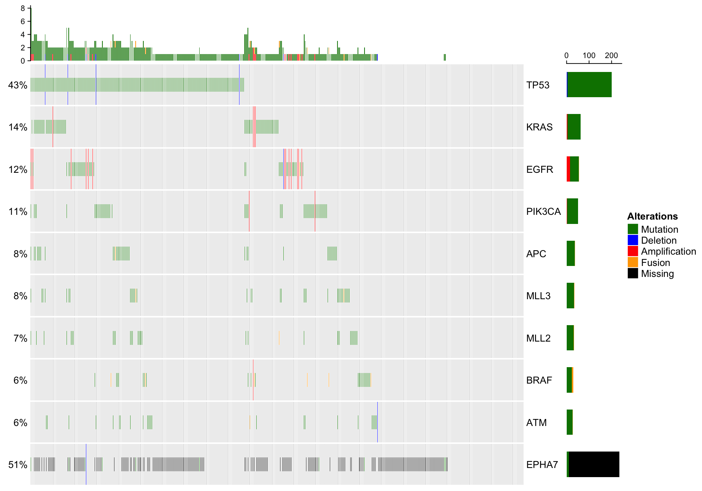
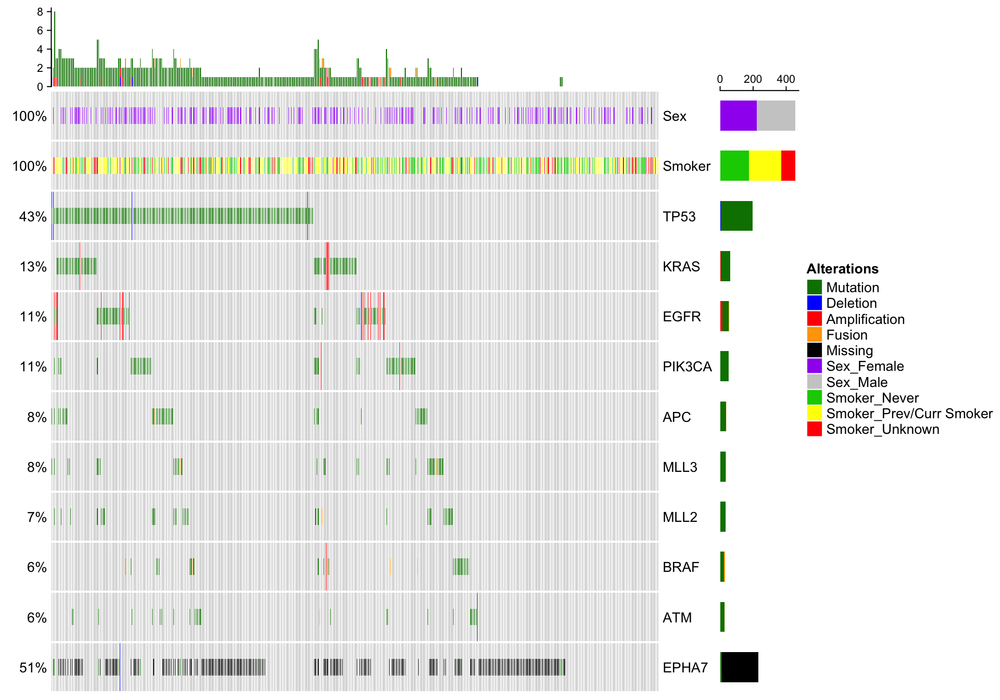
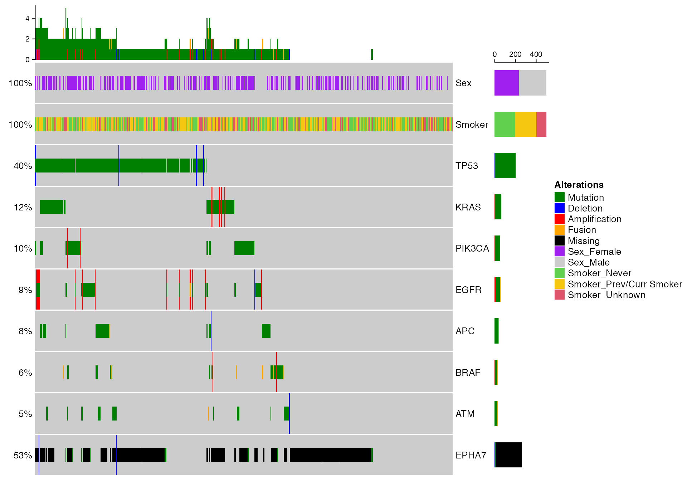

library(gnomeR)
library(dplyr)In this article we will explore the different automatized plotting functions included in gnomeR. There are two main functions in gnomeR to visualize genomic data:
maf_viz() provides an extensive summary of the mutations found in the MAF file providedplot_oncoPrint() provides an OncoPrint that let’s the user explore the comutation (or any genetic event and clinical factors) patterns in the cohort of interestThe maf_viz() function takes the following inputs:
maf a MAF file... any arguments that belong to the binmat methodmaf_viz() will return a list of plots:
varclass summarise the variant classification counts across the MAFvartype summarise the variant type counts across the MAFsnvclass summarise the SNV class counts across the MAFsamplevar summarise the variants per sample counts across the MAFtopgenes summarise the most frequently mutated genes countsgenecor summarise the correlation of genes that are most frequently mutated in a heatmapAn example of a subset of these plots is shown below.
plots_summary <- maf_viz(maf = mut)
plots_summary$varclass
plots_summary$vartype
plots_summary$snvclass
plots_summary$samplevar
plots_summary$topgenes
plots_summary$genecor
OncoPrint is a way to visualize multiple genomic alteration events by heatmap provided through the ComplexHeatmap package. We implemented an altered version of this function in gnomeR through the plot_oncoPrint() function that enables the user to explore the co-occurences in genomic and clinical features selected.
The plot_oncoPrint() function takes as arguments: - gen.dat a genetic dataframe from binmat() - clin.dat a set of clinical factors for the patients listed in gen.dat - ordered a numeric vector specifying which order the samples should be plotted in (optional)
In the first section we show how to use the output of the binmat() output to create an OncoPrint for a selected subset of genes. For consistency we will use the 10 genes used in the comutation plot above.
genes <- c("ATM","BRAF","MLL2","APC","EGFR","MLL3","PIK3CA","KRAS","TP53")
dat.gen <- binmat(maf = mut, fusion = fusion, cna = cna)
dat.gen <- dat.gen %>% select(starts_with(genes))
plot_oncoPrint(gen.dat = dat.gen)
A critical point of gnomeR is its ability to correct for the different platforms that have existed at MSKCC. We reflect this is in the OncoPrints by including black entries in the missing cells as shown below.
genes <- c("ATM","BRAF","MLL2","APC","EGFR","MLL3","PIK3CA","KRAS","TP53","EPHA7")
dat.gen <- binmat(maf = mut, fusion = fusion, cna = cna)
dat.gen <- dat.gen %>% select(starts_with(genes))
plot_oncoPrint(gen.dat = dat.gen)
In this section we will show how the user can further add clinical information to this plot.
genes <- c("ATM","BRAF","MLL2","APC","EGFR","MLL3","PIK3CA","KRAS","TP53","EPHA7")
dat.gen <- binmat(maf = mut, fusion = fusion, cna = cna)
dat.gen <- dat.gen %>% select(starts_with(genes))
clin.patients.dat <- clin.patients[match(
abbreviate(rownames(dat.gen),strict = TRUE, minlength = 9),
clin.patients$X.Patient.Identifier),] %>%
rename(DMPID = X.Patient.Identifier, Smoker = Smoking.History) %>%
select(DMPID, Sex,Smoker) %>%
filter(!is.na(DMPID)) %>%
distinct(DMPID,.keep_all = TRUE)
dat.gen <- dat.gen[match(clin.patients.dat$DMPID,
abbreviate(rownames(dat.gen),strict = TRUE,
minlength = 9)),]
clin.patients.dat <- clin.patients.dat %>%
mutate(DMPID = as.character(DMPID)) %>%
tibble::column_to_rownames('DMPID')
rownames(dat.gen) <- rownames(clin.patients.dat)
plot_oncoPrint(gen.dat = dat.gen,
clin.dat = clin.patients.dat)
The copy-number alterations data we have covered up to now is a discrete estimation of the alterations that occured. There however exist more nuanced and accurate data for copy-number alterations observed in a tumor. In gnomeR we include an example of segmentation file and relevant functions from the facets package that provides an allele-specific copy number and clonal heterogeneity analysis tool for high-throughput DNA sequencing. We show in this section how to visualize this data:
set.seed(123)
samples <- as.character(unique(mut$Tumor_Sample_Barcode))[sample(1:length(unique(mut$Tumor_Sample_Barcode)), 100, replace=FALSE)]
p.heat <- facets.heatmap(seg = seg, patients = samples, min.purity = 0)
p.heat$p
In the heatmap above we show the estimate gains and losses over segments in each chromosomes (rows) and in each patient (columns). Now that the purity of the tumor sample is an important factor in order to get reliable data. Moreover we include argument ordered and outcome that enables the user to sort the heatmap by a specific feature of interest. We show an example below with a simulated feature of outcome:
outcome <- rnorm(length(samples))
p.heat <- facets.heatmap(seg = seg, patients = samples, min.purity = 0, outcome = outcome, ordered = order(outcome))
p.heat$p